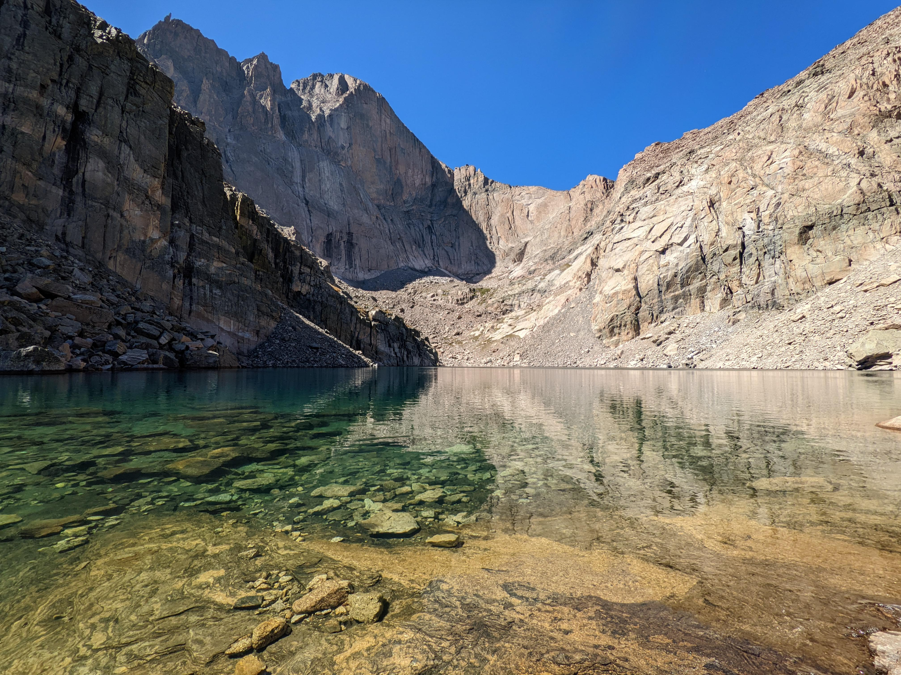
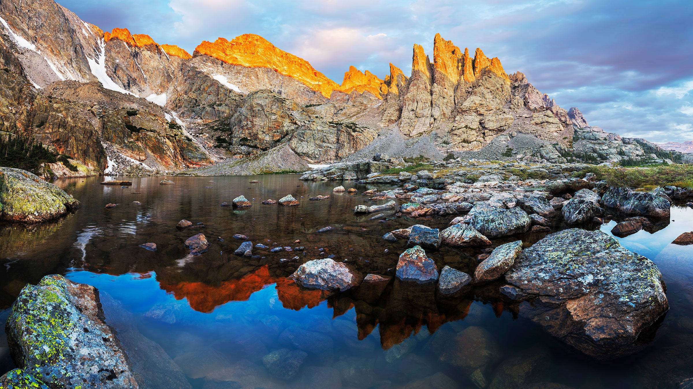
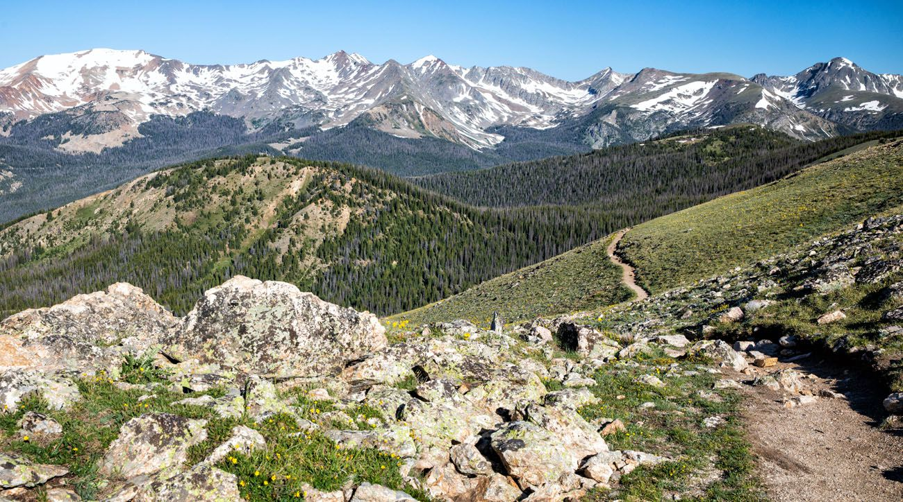
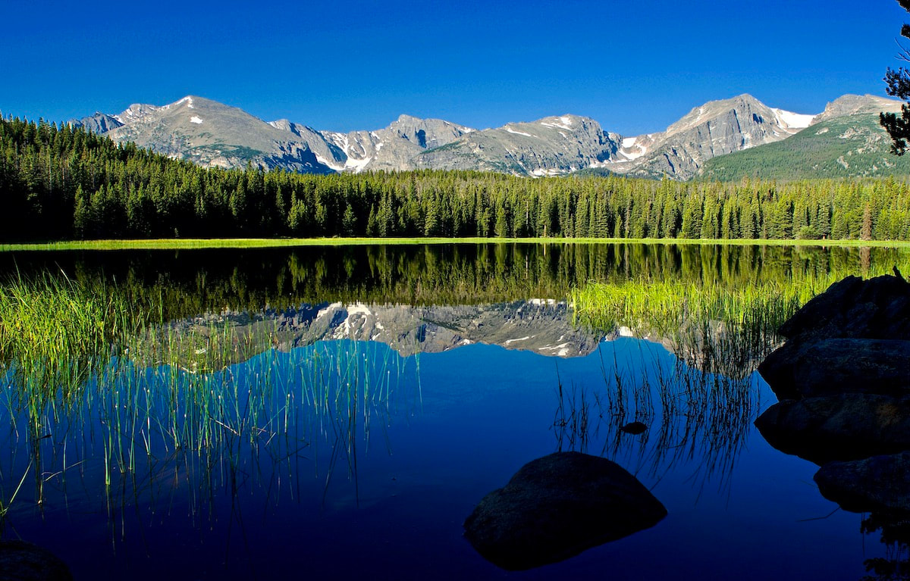
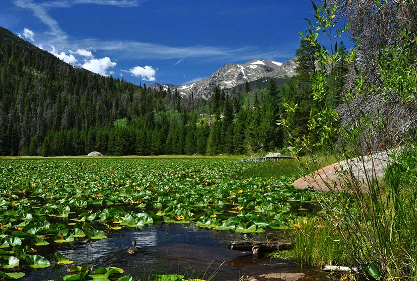

- Chasm Lake
- Level: Difficult
- Distance: 8 miles
- Elevation Start: 9384 ft
- Elevation Gain: 2552 ft
- Highlights:
- Beautiful, close-up views of Longs Peak
- Gorgeous aqua color of Chasm Lake
- Several waterfalls

- Sky Pond
- Level: Difficult
- Distance: 8.6+ miles
- Elevation Start: 9171 ft
- Elevation Gain: 1771 ft
- Highlights:
- Tons of great scenery
- Many different paths to take there and back
- Plenty of lakes and waterfalls along the way that are lovely destinations by themselves
- Sawtooth rock formation at Sky Pond

- Mount Ida
- Level: Difficult
- Distance: 9.4 miles
- Elevation Start: 10758 ft
- Elevation Gain: 2414 ft
- Highlights:
- Hike on the continental divide
- Requires a lovely drive on Trail Ridge Road which goes up to 12000 ft and offers great views of the park
- Many pikas and marmots to greet you

- Bierstadt Lake
- Level: Moderate
- Distance: 2.9 miles
- Elevation Start: 8856 ft
- Elevation Gain: 620 ft
- Highlights:
- Amazing and underrated mountain views
- Fairly short hike that almost always has parking in the morning, even during busy times of year
- Opportunities to extend hike
- Lots of hummingbirds feasting on the wildflower nectar in the summer

- Cub Lake
- Level: Moderate
- Distance: 5.2 miles
- Elevation Start: 8081 ft
- Elevation Gain: 705 ft
- Highlights:
- Great hike for acclimating to the elevation
- Almost always elk and moose sightings
- Opportunities to extend hike

Back to top